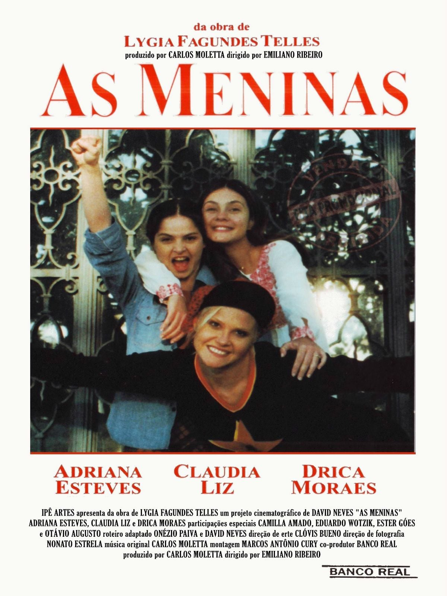

DA LITERATURA PARA AS TELAS DO CINEMA
A transposição do romance clássico de Lygia Fagundes Telles sob a direção de Emiliano Ribeiro.

Cartaz oficial da adaptação cinematográfica (1995).Em 1995, o romance As Meninas ganhou uma marcante adaptação cinematográfica dirigida por Emiliano Ribeiro, com roteiro assinado por David Neves. O longa-metragem levou para os cinemas o clima tenso do início dos anos 1970.
O elenco principal contou com renomadas atrizes brasileiras: Adriana Esteves no papel de Lorena, Drica Moraes interpretando Lia e Cláudia Liz no papel de Ana Clara. As atrizes foram aclamadas pela crítica, conquistando o prêmio coletivo de Melhor Atriz no Festival Internacional de Cinema de Cartagena.
A produção conseguiu preservar o tom soturno da época e a complexidade das relações entre as três protagonistas, tornando-se uma referência importante nas adaptações do cinema nacional.
ASSISTA AO FILME COMPLETO NO YOUTUBE:
Acesse a adaptação cinematográfica na íntegra através do link oficial abaixo:
▶ ASSISTIR AS MENINAS (1995) NO YOUTUBE